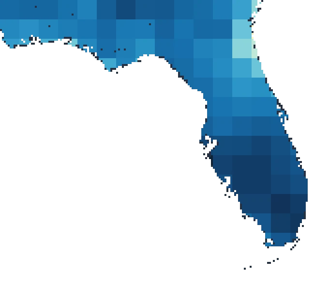
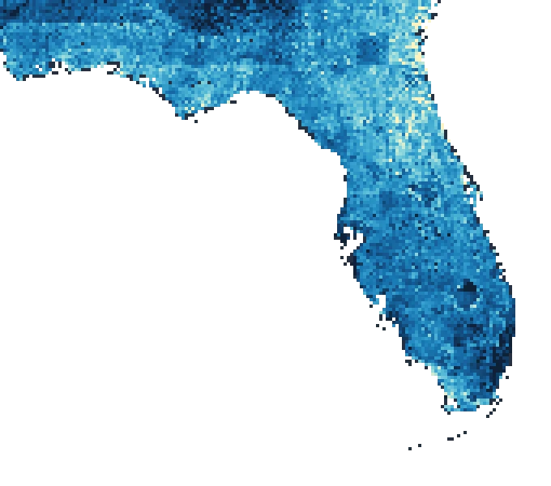
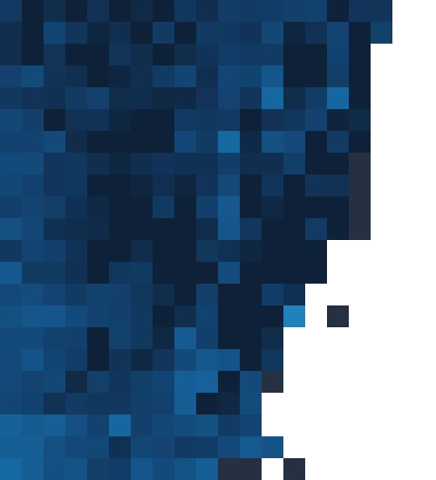
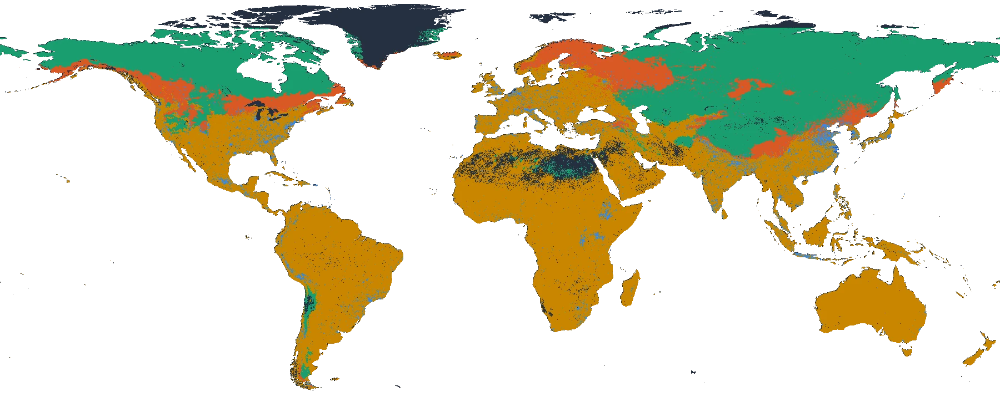

- Exact cross-level coherence; with a random-forest local term it costs no accuracy under transfer.
- Two-part maps transfer to an independent compendium (AUC 0.82–0.87) and to NEON traps (0.92).
- Intensity-space ensembling is required for coherence.
HiCo-Fuse · hierarchical coherent fusion
One model from the globe down to the city block.
A multimodal framework for Aedes albopictus, Ae. aegypti, Culex and Anopheles. It fuses climate, landscape, human footprint and AlphaEarth satellite embeddings, and it is built so that a local map can never contradict the regional map above it. Dengue, West Nile and malaria layers follow from the vector maps.
HiCo-Fuse · Ae. albopictus · 0.2°LAT — LON —

LowHigh
01 · Framework
Five layers, each answering one question
Every layer is a separate, testable module. Select a layer to see its rule, what it assumes and what the tests showed.
02 · The core idea · coherence
A city cannot exceed its region
Maps disagree across scales when each level is estimated on its own: a country model and a city model, or a regional compendium and local citizen science. HiCo builds each 0.5° region from its 0.05° children, so the two levels agree exactly.
ηs(x) = As(P) + Bs(x) − log meanx′∈P eBs(x′)
Macro term · the 0.5° region's total, from pooled region features and coarse evidence
Micro term · where inside the region, from local features
Normaliser · makes the mean of the children equal the parent, exactly



Two-part intensity, square root, one shared scale per regionhigh
Regions off by more than 2×63,074 global 0.5° regions
Coarse model fitted separatelyHiCo
Does coherence cost accuracy?20 transfer splits
One implementation rule matters: seed ensembles are averaged in intensity space (the mean of eη). Averaging log-scores breaks additivity; before that fix up to 48% of regions were off by more than 2×.
03 · Two-part maps
Fixing a silent failure of composition models
A composition score answers "if a mosquito is reported here, which species is it?" It is undefined where no mosquito community is observed: the first global maps put the top 20,000 Ae. aegypti cells in the Sahara and Arabia. Multiplying by a community-support term fixes this.
Ss(x) = σ(h(x)) · πs(x)
h is community support, fitted with effort covariates (spatial-CV AUC ) and mapped with effort held at its mean; πs is the species share.
External validation, never used in trainingAUC · composition only → two-part
MLP early fusionHiCocomposition onlytwo-part
Kraemer et al. (2015) compendium cells against 50,000 random land cells; the ">~110 km" rows keep only cells at least two regions from any iNaturalist report of that species, a direct extrapolation test. NEON 2026 is detection vs non-detection at 373 trap sites; it was inspected earlier, so it is a diagnostic rather than a blind test.
04 · Representation and fusion
Which representation carries the signal
Same multinomial likelihood, features, optimiser and early stopping for every model; held-out 10° blocks (5 folds × 2 seeds, 153 blocks). Within-fold SD is about 0.02–0.05 AUC, so differences under 0.02 are within noise.
Mean held-out AUCaxis from 0.55 · band = 0.02 below the best
Single modalityFlat fusionHiCo hierarchy
What this shows
- AlphaEarth carries most of the signal alone; early MLP fusion adds little on top.
- A late rank ensemble trails early fusion: rank blending discards calibration and cross-modality interactions.
- The coherence constraint costs about AUC when the macro term sees pooled all-modality features, and more with climate alone, because a mostly urban 0.5° region shares its climate with rural neighbours.
- Gated experts match early fusion within noise and add a per-cell attribution to modalities (next section).
05 · Interpretability
Which representation drives the local map
Per-vector gates are computed from climate and human context, so the model reports, cell by cell, which modality it trusts.

AlphaEarth governs allocation across inhabited land. In the empty boreal zone the human-footprint expert dominates, mostly by encoding the absence of people.
06 · Extensions under test
Three modules, three honest verdicts
07 · Status
What is established, and what is not
- A predictive gain from gated over early fusion.
- A gain from coarse evidence on the fine endpoint.
- A gain from vision-language concepts over AlphaEarth at 0.05°.
- A species-pool layer on the macro term: the main transfer error is the regional species mix (see Evidence).
- Urban-gradient survey test with AIMSurv ovitraps.
- Multi-scale AlphaEarth and attention pooling for the macro term.
LAT — LON —
Read low values in tropical Asia and Africa as weak evidence, not absence: iNaturalist reports are concentrated in the Americas and Europe, so values there lean on the support term and on what the model learned elsewhere. Maps rank relative suitability; they are not presence probabilities, abundance or disease risk.
Evidence · research loop
Tested where the models have never seen data
Nine models under nine ways of holding out the world, ten fusion methods and five redesign iterations, each chosen by the last one's failure.
FindingsBenchmarkFusion methodsExperimentsModel familiesLedger
01 · Findings
The binding constraint is not the fusion layer
02 · Holdout benchmark
Nine models under nine ways of holding out the world
Multinomial composition of Culicidae reports in 7,004 cells at 0.05°, with 105 features. Select a holdout design and a metric.
All designsDarker = better · selected design outlined
03 · Fusion methods
Ten ways to combine Earth-observation evidence
Each card states the rule, what it assumes and what the holdout benchmark showed.
04 · Experiments
What each redesign tested
05 · Model families
Four model families, built in sequence
Each family started from what the previous one could not do. Scores are comparable only within a family, because tasks and labels differ.
06 · Research ledger
One entry per experiment
What improved, what failed and the next step it set, so rejected ideas are not retried without new evidence.
Methods · data and validation
What goes in, how it is tested, what it cannot say
01 · Data
Citizen-science reports, with independent checks
The model learns from the class mix of mosquito reports. Reporting effort multiplies every class equally, so it cancels in the composition; "other Culicidae" is the reference class.
Report cells by class0.05° cells, 2022–2025
Sources and their roles
| Source | Role |
|---|---|
| iNaturalist research-grade Culicidae (via GBIF) | Training labels, 2022–2025 |
| Kraemer et al. (2015) compendium | External validation; optional 0.5° macro evidence |
| NEON 2026 mosquito traps | Detection diagnostic, 373 sites |
| Austrian AGES surveillance | Survey likelihood in the observation-aware module |
| AIMSurv European ovitraps | Prepared urban-gradient endpoint (1,405 traps) |
| Sentinel-2 2024 median chips | Vision-language concept pilot (2,202 cells) |
02 · Representations
105 features in four modalities
Climate
WorldClim BIO1–19 and ERA5-Land seasonal summaries.
Landscape
Terrain, NDVI/EVI, land cover, land-surface temperature, surface water.
Human footprint
WorldPop density, GHSL built-up, VIIRS night lights, accessibility.
AlphaEarth
Google AlphaEarth Foundations 2024 satellite embedding, 64 dimensions.
03 · Research pipeline
Every experiment is chosen by the last one's failure
Each iteration records its question, hypothesis, holdout design, result, failure and next step in a structured ledger.
- DataReports, surveys, external compendia
- RepresentationClimate · landscape · human · AlphaEarth
- Fusion10 methods, from concatenation to support decay
- Spatial modelFlat, hierarchical, observation-aware
- Validation9 holdout designs, paired sign tests
- DiagnosisDistance, novelty, prior shift, proxies
- RedesignNext hypothesis from the observed failure
04 · Validation designs
Random splits are a reference; transfer is the headline
05 · Limitations
What the maps cannot yet answer
Regional species pool
Which species have arrived in a region cannot be learned from environment. A species-pool layer for all five classes is the next data milestone.
Data deserts
Africa has 75 report cells and Latin America is weakest for every model. Global maps there are extrapolations.
Observation bias
AlphaEarth encodes human footprint (R² up to 0.88), so report-based models can learn where people report. Surveys across the urban gradient are needed.
Not risk or abundance
Maps rank relative suitability or report composition. Disease layers use thermal envelopes; the West Nile limits are approximate.
06 · Terms